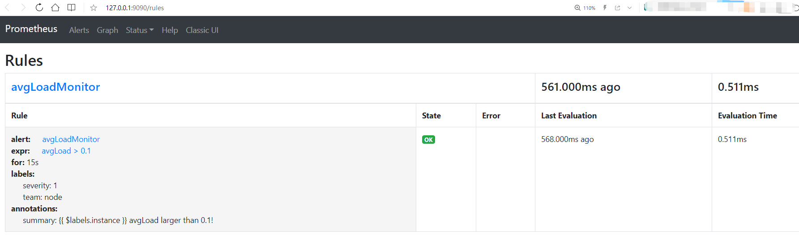

使用 Prometheus 监控告警
DolphinDB 提供了三种方式进行性能监控：
- 使用内置函数,如
getperf,getClusterPerf和getJobStat。 - Web界面。
- 通过第三方系统的 API，如 Prometheus, Grafana 等。
前两种方式的使用说明详见用户手册，本文以使用 Prometheus 监控 DolphinDB 为例来详细说明第三种方法。
本文以监控系统平均负载为例，安装配置 Prometheus 和其 Alertmanager 组件，然后接入邮件报警，演示系统负载高时自动邮件报警的功能。用户可以参照此文，根据自己的实际需求来实现具体的运维方案。
1. Prometheus metrics
DolphinDB 为需要监控的服务产生相应的 metrics（指标），Prometheus Server 可以直接使用。DolphinDB 目前支持的 metrics 如下所示：
| 指标 | 类型 | 含义 |
|---|---|---|
| cpuUsage | Gauge | DolphinDB进程占用CPU的百分比（单位：无） |
| memoryUsed | Gauge | 节点使用的内存（单位：字节） |
| memoryAlloc | Gauge | 节点中DolphinDB当前内存池的容量（单位：字节） |
| diskCapacity | Gauge | 磁盘容量（单位：字节） |
| diskFreeSpace | Gauge | 磁盘剩余空间（单位：字节） |
| lastMinuteWriteVolume | Gauge | 前一分钟写磁盘容量(单位：字节) |
| lastMinuteReadVolume | Gauge | 前一分钟读磁盘容量（单位：字节） |
| lastMinuteNetworkRecv | Gauge | 前一分钟网络接收字节数（单位：字节） |
| lastMinuteNetworkSend | Gauge | 前一分钟网络发送字节数（单位：字节） |
| diskReadRate | Gauge | 磁盘读速率（单位：字节/秒） |
| diskWriteRate | Gauge | 磁盘写速率（单位：字节/秒） |
| networkSendRate | Gauge | 网络发送速率（单位：字节/秒） |
| networkRecvRate | Gauge | 网络接收速率（单位：字节/秒） |
| cumMsgLatency | Gauge | 流数据订阅节点所有已接收的消息的平均延时（单位：纳秒） |
| lastMsgLatency | Gauge | 流数据订阅节点最后收到的消息的延时（单位：纳秒） |
| maxLast10QueryTime | Gauge | 前10个完成的查询执行所耗费时间的最大值（单位：纳秒） |
| medLast10QueryTime | Gauge | 前10个完成的查询执行所耗费时间的中间值（单位：纳秒） |
| medLast100QueryTime | Gauge | 前100个完成的查询执行所耗费时间的中间值（单位：纳秒） |
| maxLast100QueryTime | Gauge | 前100个完成的查询执行所耗费时间的最大值（单位：纳秒 |
| maxRunningQueryTime | Gauge | 当前正在执行的查询的耗费时间的最大值（单位：纳秒） |
| avgLoad | Gauge | 平均负载（单位：无） |
| jobLoad | Gauge | 作业负载（单位：无） |
| runningJobs | Gauge | 正在执行中的作业和任务数（单位：无） |
| queuedJobs | Gauge | 队列中的作业和任务数（单位：无） |
| connectionNum | Guage | 节点连接数 |
metric 有两种查看方式：
- 通过 Prometheus Server 进行查看；
- 选择要查看的 ip:port，进入对应的网址
http://ip:port/metrics进行查看。例如，本机单节点监听在 8848 端口的 DolphinDB，可以进入网址http://127.0.0.1:8848/metrics查看相关数据。
2. 下载Prometheus
本例的测试环境为已安装 Ubuntu 16.04 LTS 的台式机，使用 2.26.0 版本的Prometheus 和 0.21.0 版本的Alertmanager。
从 Prometheus 官网下载 Prometheus 和 Alertmanager，下载链接为：https://prometheus.io/download/。相关文档可参阅官方帮助。
DolphinDB有以下三种部署方式：
- 通过Docker容器部署运行DolphinDB；
- 利用K8S等工具部署DolphinDB的相关组件；
- 直接部署 DolphinDB。
注：部署 DolphinDB 的相关文档可查阅：DolphinDB教程
3.安装及配置
3.1 Prometheus 安装及配置
- 解压缩安装包
解压缩之后，目录文件如下所示:
demo@zhiyu:~/prometheus-2.26.0.linux-amd64$ ls
console_libraries consoles data LICENSE NOTICE prometheus prometheus.yml promtool- 修改prometheus.yml
其中,上述目录下的 prometheus.yml 就是配置文件，修改后配置如下:
global:
scrape_interval: 15s
evaluation_interval: 15s
alerting:
alertmanagers:
- static_configs:
- targets:
- 127.0.0.1:9093
rule_files:
- "./avgLoadMonitor.yml"
scrape_configs:
- job_name: 'DolphinDB'
static_configs:
- targets: ['115.239.209.122:8080','115.239.209.122:25667']其中，alerting部分的targets部分，指向Alertmanager的地址。
rule_files部分定义了预警规则，其中avgLoadMonitor.yml需要另外创建，下文将介绍如何配置。
scrape_configs部分中的 targets 指向待监控的 DolphinDB 的节点地址。本例中添加了2个 DolphinDB 节点，IP 地址为 115.239.209.122，监控端口为 8080 和 25667。若用户在实际操作中想要添加其他节点，按照“IP:PORT”的格式添加在targets中。
- 创建 avgLoadMonitor.yml 文件
配置 avgLoadMonitor.yml 的内容如下所示:
groups:
- name: avgLoadMonitor
rules:
- alert: avgLoadMonitor
expr: avgLoad > 0.1
for: 15s
labels:
severity: 1
team: node
annotations:
summary: "{{ $labels.instance }} avgLoad larger than 0.1!"
本例中使用的指标是 avgLoad（DolphinDB 提供的一个指标），报警条件为 avgLoad> 0.1。用户可根据实际需要，指定指标和报警条件。
3.2 Alertmanager 安装及配置
- 解压缩安装包
解压后，目录文件如下所示:
demo@zhiyu:~/alertmanager-0.21.0.linux-amd64$ ls
alertmanager alertmanager.yml amtool LICENSE NOTICE示例中，alertmanager.yml 是配置文件，报警通知渠道可以是电子邮箱、钉钉、企业微信等。
当预警规则被触发时，Prometheus 会根据其配置文件中的 alerting 部分，推送信息给 Alertmanager，Alertmanager 将向已配置的渠道发送报警消息。
- 配置 alertmanager.yml
本例演示的报警渠道为QQ邮箱。修改 alertmanager.yml 如下：
global:
resolve_timeout: 5m
smtp_from: 'xxxx@qq.com'
smtp_smarthost: 'smtp.qq.com:465'
smtp_auth_username: 'xxxx@qq.com'
smtp_auth_password: 'yyyy'
smtp_require_tls: false
smtp_hello: 'qq.com'
route:
group_by: ['alertname']
group_wait: 5s
group_interval: 5s
repeat_interval: 5m
receiver: 'email'
receivers:
- name: 'email'
email_configs:
- to: 'xxxx@qq.com'
send_resolved: true
inhibit_rules:
- source_match:
severity: 'critical'
target_match:
severity: 'warning'
equal: ['alertname', 'dev', 'instance']
注 ：
- xxxx@qq.com 请替换为实际邮箱地址；
- 邮箱需要开启 SMTP 功能，smtp_auth_password: 'yyyy'中的 yyyy 替换为第三方登录邮箱的授权码。
以qq邮箱为例，获取授权码的具体步骤可参考链接：获取授权码
3.3 启动 Prometheus 和 Alertmanager
- 启动 Prometheus 命令如下：
demo@zhiyu:~/prometheus-2.26.0.linux-amd64$ nohup ./prometheus --config.file=prometheus.yml &prometheus 默认绑定在 9090 端口，可以通过前端 Web 访问，本例使用的地址为 127.0.0.1:9090。
- 启动 Alertmanager 命令如下：
demo@zhiyu:~/alertmanager-0.21.0.linux-amd64$ nohup ./alertmanager --config.file=alertmanager.yml &AlertManger 默认绑定在 9093 端口，访问地址是 http://127.0.0.1:9093，当 Prometheus 中触发报警规则，在该地址中可以看到推送信息，然后提交给具体的渠道处理，从而实现报警。本例中，当负载超过 0.1 时，邮箱会收到报警邮件。
完成启动后，意味着 DolphinDB 的指标监控和报警也已完成。
4. 监控展示
Prometheus 内置简易的 Web 控制台，可以查询指标、配置信息等，示例如下：
访问 http://127.0.0.1:9090/targets 查看被监控的节点：
访问 http://127.0.0.1:9090/rules 查看监控报警规则：
访问 http://127.0.0.1:9090/graph 在输入框中输入指标如 lastMinuteNetworkRecv，查看对应指标的图形展示：

在实际工作中，经常将 Prometheus 作为 Grafana 的数据源，使用Grafana查看指标或者创建仪表盘。DolphinDB 已经实现了 Grafana 的服务端和客户端的接口，具体配置可以参考 grafana 教程。